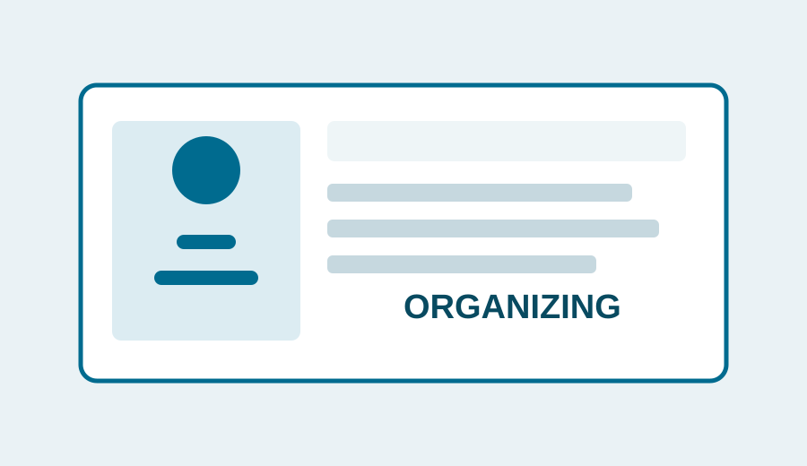
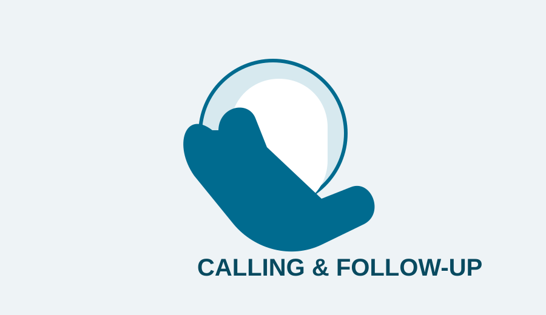
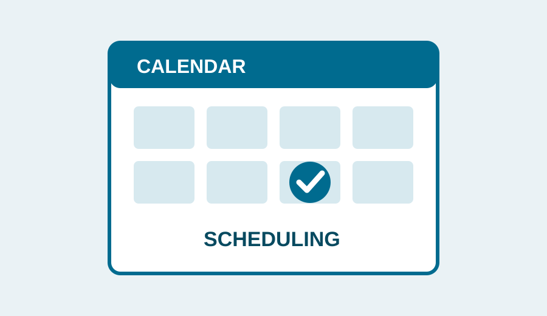
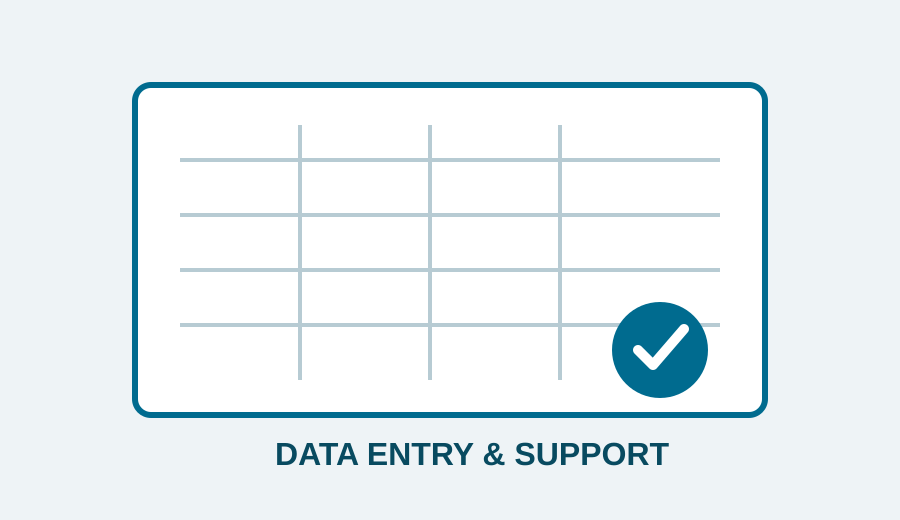

Organizing
File organization, inbox cleanup, document sorting, task lists, and administrative coordination.

File organization, inbox cleanup, document sorting, task lists, and administrative coordination.

Outbound calls, follow-ups, information gathering, confirmations, and professional client communication.

Calendar management, appointment setting, meeting coordination, reminders, and rescheduling.

Accurate record updates, spreadsheet work, ticket documentation, research, and routine administrative support.